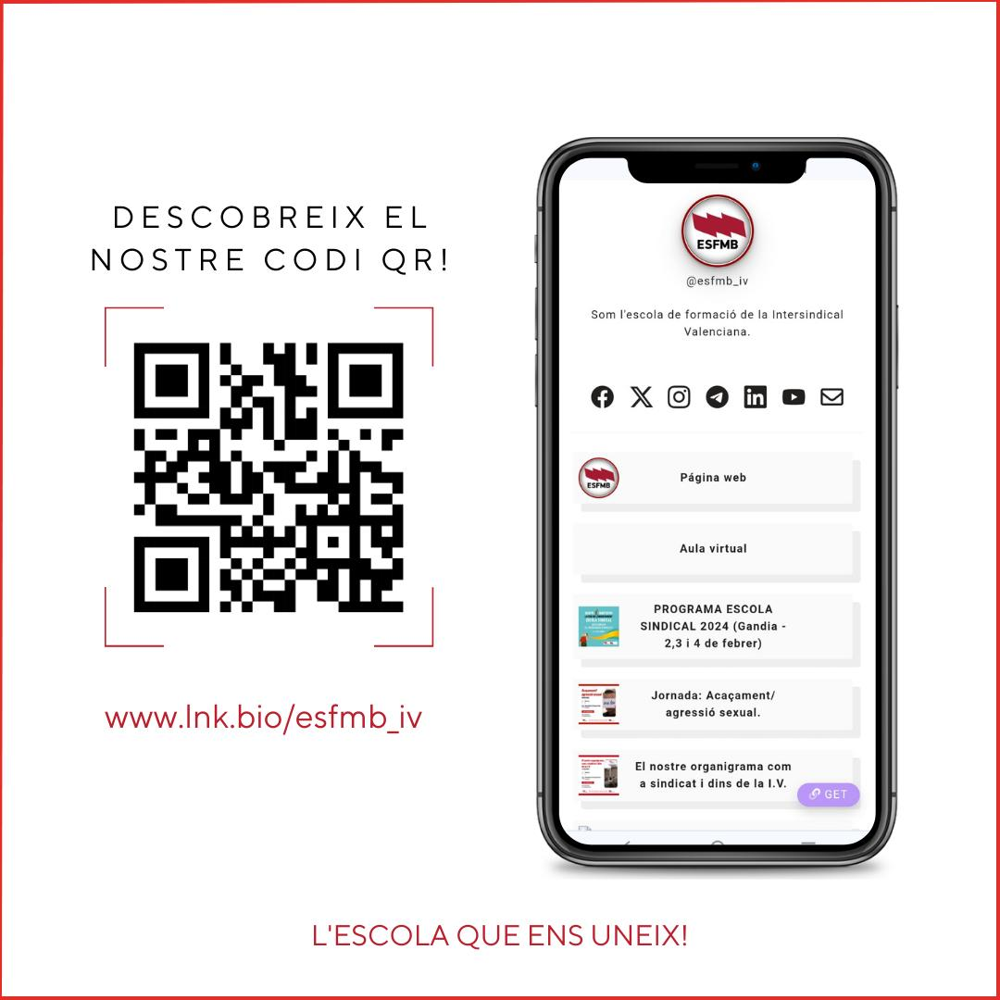

El proyecto
Nuestro centro participa en el consorcio de movilidad Erasmus+ coordinado por el STEPV (Sindicat de Treballadores i Treballadors de l'Ensenyament del País Valencià – Intersindical Valenciana), entidad acreditada (acreditación SEPIE 2020-1-ES01-KA120-VET-000095955). La gestión la realiza la Escola Sindical de Formació Melchor Botella (ESFMB).
El programa permite al alumnado de Grado Medio realizar sus prácticas (FCT) en empresas europeas, mejorando idiomas, competencias profesionales y empleabilidad.
Alumnado
Estudiantes de Grado Medio (y de cualificaciones profesionales) de los centros del consorcio.
Duración
Movilidades de 1 mes o de 3 meses. Cada centro selecciona 3 alumnos/as para cada modalidad.
Proyectos 2026-27
2026-1-ES01-KA121-VET-000431407
2026-1-ES01-KA121-VET-000447521
Profesorado
También hay movilidades para profesorado acompañante y para observación en puestos de trabajo (job shadowing).
¿Qué es Erasmus+?
El programa de la UE para apoyar la educación, la formación, la juventud y el deporte. En 2021-2027 hace especial hincapié en la inclusión social, las transiciones ecológica y digital y la participación juvenil.
Requisitos del alumnado
- Estar matriculado/a en un FP de Grado Medio.
- Ser seleccionado/a por tu centro mediante el proceso establecido.
- Haber sido aceptado/a por una empresa o institución para las prácticas.
- Estar matriculado/a en el módulo FCT.
- Haber finalizado el grado medio el año anterior, siempre que no curses Grado Superior.
Dónde y en qué
Prácticas de 1 a 3 meses en una empresa, centro de trabajo (ONG, institución pública…) o escuela de FP, en países como Alemania, Austria, Bélgica, Grecia, Irlanda, Italia, Malta, Francia y Portugal.
Descargar el tríptico Erasmus+ FP (PDF) · Más información: esfmb.org, sepie.es, erasmusplus.gob.es
Glosario
- Consorcio: grupo de centros que se unen bajo una entidad coordinadora para gestionar las movilidades.
- Organización de envío: nuestro centro (IES/CIPFP).
- Organización de acogida: la empresa o entidad en el país de destino.
- Tutor/a profesional de prácticas: persona de la empresa que guía al alumno/a.
- Tutor/a de estancia: acompaña al grupo durante la movilidad.
- Acompañante: docente que viaja con el alumnado.
- Participante con menos oportunidades: persona con obstáculos económicos, sociales, culturales, geográficos, de salud, discapacidad, origen inmigrante, etc.
Convocatoria 2026-27
El STEPV convoca el programa de movilidad de estudiantes para realizar prácticas en una empresa o centro educativo de otro país participante (UE, Islandia, Liechtenstein, Noruega, Turquía, Macedonia del Norte y Serbia) o, en casos especiales, de países no asociados. Proyecto 2026-1-ES01-KA121-VET-000431407. Más información general en www.sepie.es.
📅 Fechas clave
- 1/09/2026: se abre el plazo de solicitud.
- 30/10/2026: máximo para que cada centro comunique su formulario a la comisión de Internacionalización.
- 25/11/2026: se publica el listado de pre-asignación de becas.
- 1/05/2027: límite del plazo (o hasta cubrir las becas).
✅ Quién puede solicitar
- Nacionalidad de un país del programa o permiso de residencia válido durante toda la movilidad; DNI/NIE vigente.
- Estar matriculado/a en FP Básica o Grado Medio de un centro del consorcio (recién titulados/as, con vinculación acreditada).
- Cumplir los requisitos generales y los del centro; acreditar el idioma.
- No haber renunciado antes a una beca (salvo fuerza mayor).
- No superar 10 meses de estancias Erasmus (estudios o prácticas) en el mismo ciclo.
⏱️ Duración
Mínimo 1 mes (32 días) y máximo 3 meses (92 días), siempre según la normativa de cada titulación. Se pueden hacer varias estancias por etapa, sin superar 12 meses por ciclo.
📝 Solicitud
Formulario online «Solicitud de becas Erasmus Prácticas 26-27» de tu centro, con:
- CV Europass y carta de presentación (en el idioma de las prácticas).
- Acreditación del idioma, si procede.
- Justificantes de familia numerosa/monoparental, beca de estudios, discapacidad u otras situaciones de menos oportunidades.
Indica si aportas empresa y si pides la prueba de nivel B1.
Requisito de idioma (a criterio del centro)
- Se exige nivel A2 o B1 como mínimo, si el centro lo requiere, del idioma de las prácticas (inglés, francés o alemán). Si aportas empresa, ella evalúa tu competencia lingüística.
- En Italia o Portugal no hace falta acreditar idioma (salvo que lo pida la empresa), aunque es aconsejable conocerlo.
- Puedes acreditarlo sin prueba con un B1 reconocido (ACLES/CertAcles, Cambridge PET, Pearson PTE Level 2, Goethe-Zertifikat B1, DELF B1, Escuela Oficial de Idiomas…), con bachillerato bilingüe o con 40 ECTS cursados en el idioma del país.
- Quien disfrutó de una beca Erasmus el curso anterior mantiene la nota de la prueba de idiomas.
- No se admite como acreditación el simple resguardo de solicitud del certificado.
Empresa de destino
La empresa o centro de acogida se puede buscar de tres formas: por el equipo del STEPV (comisión de Internacionalización), por el propio alumno/a o por el centro docente, ambos con el apoyo del equipo Erasmus Prácticas. En los dos últimos casos hay que comunicarlo al presentar la solicitud.
Prioridad y adjudicación
- Cada centro tiene un número de becas asignado y baremará a su alumnado de forma colegiada y transparente (criterios publicados antes de abrir el plazo, solo méritos acreditados, listas con puntuación desglosada y declaración de ausencia de conflicto de intereses). Las becas sin cubrir se redistribuyen entre los centros.
- Tienen prioridad: el alumnado con menos oportunidades, quien no ha tenido antes una beca Erasmus y quien aporta empresa al solicitar.
- Al pre-asignar la beca se firma el compromiso (reglamento y convenio). Si no se firma, se entiende como renuncia y pasa al alumnado de reserva, que no podrá volver a solicitarla ese curso salvo que queden becas libres.
- Las alegaciones se envían por email a la técnica de Erasmus Prácticas. La adjudicación definitiva llega al completar los trámites.
Reconocimiento académico
Está garantizado con el visto bueno del responsable Erasmus y del tutor/a de prácticas. Antes de salir, alumno/a y tutor/a firman el Learning Agreement con las tareas y la duración. Al terminar recibes el Documento de Movilidad Europass y el Learning Agreement.
Obligaciones de la convocatoria
- Presentar la solicitud implica aceptar la convocatoria y seguir las instrucciones del equipo Erasmus.
- Iniciar los trámites con al menos 3 meses de antelación (en Grado Medio que use la beca para la FCT, toda la documentación debe estar lista 40 días antes de la salida).
- Enviar a la empresa de destino la documentación requerida en plazo.
- Incumplir las obligaciones o no aprovechar la beca supone la rescisión y el reembolso de los fondos.
Criterios de selección
La puntuación máxima es de 15 puntos. Las candidaturas se ordenan de mayor a menor puntuación; se adjudican las plazas por orden y el resto queda en lista de espera. En caso de empate, se prioriza al alumnado becario. Los centros pueden ampliar estos criterios.
Requisitos
- Ser mayor de edad (o cumplir 18 años antes de la movilidad).
- No tener amonestaciones disciplinarias en el expediente.
Idioma del país (máx. 4)
- A2 → 1 punto
- B1 → 2
- B2 → 3
- C1–C2 → 4
Entrevista, CV y carta (máx. 7)
- Entrevista + CV + carta de motivación (en inglés): hasta 5.
- Informe del tutor/a: hasta 2.
- La entrevista la realiza el coordinador/a de la ESFMB.
Nota media (máx. 4)
- Aprobado → 1
- Bien → 2
- Notable → 3
- Sobresaliente → 4
Media del ciclo (de 1.º si estás en 2.º; todo el ciclo si eres titulado/a reciente).
Calculadora orientativa
Qué incluye la movilidad
✈️ Viaje
Ida y vuelta según tarifas SEPIE.
🏠 Alojamiento
Según tarifas SEPIE por país.
🛡️ Seguros
Sanitario, responsabilidad civil y profesional, y asistencia 24 h.
🏢 Empresa de prácticas
Búsqueda de empresa y tutor/a profesional.
🚌 Transporte local
Abono según distancia y país.
💶 Dinero de bolsillo
Según tarifas SEPIE del país.
🗣️ Curso de idioma
Si no está disponible en EU Academy.
🤝 Tutoría
Tutor/a de estancia, con presencia de 4–6 días al inicio y antes del regreso.
El importe depende del país y de la beca disponible en el momento de la salida: consulta la sección Beca y financiación.
Beca y financiación
80 % + 20 %
La beca cubre el 80 % de los costes totales de la movilidad (cofinanciación europea, vía SEPIE). El 20 % restante lo aporta la persona participante.
Dos partes
Una parte la gestiona la coordinadora (vuelos, seguros, alojamiento…) y la otra se ingresa al alumno/a en concepto de manutención y pequeños gastos.
Pagos
El STEPV ingresa el 80 % de la beca concedida en tu cuenta una vez recibido su primer pago del SEPIE; el saldo restante se abona al finalizar y justificar la documentación del convenio de subvención.
Contenido de la beca
- Vuelos de ida y vuelta.
- Seguros (asistencia, accidentes y responsabilidad civil).
- Transfer del aeropuerto al alojamiento (ida y vuelta).
- Alojamiento (31 o 91 días).
- Transporte local (si es necesario para las prácticas).
- Prácticas laborales (30 o 90 días).
- Curso de idioma (20 h)*.
- Visita turística (solo en algunos países)*.
- Documentación y certificaciones, tutorización en estancia y tutor/a de empresa.
*Depende de cada país. Los vuelos reciben una partida individual según los kilómetros.
Ayuda por grupos de países
| Grupo | Países |
|---|---|
| Grupo 1 | Alemania, Austria, Bélgica, Dinamarca, Finlandia, Francia, Irlanda, Islandia, Italia, Liechtenstein, Luxemburgo, Noruega, Países Bajos y Suecia |
| Grupo 2 | Chequia, Chipre, Eslovaquia, Eslovenia, España, Estonia, Grecia, Letonia, Malta y Portugal |
| Grupo 3 | Bulgaria, Croacia, Hungría, Lituania, Macedonia del Norte, Polonia, Rumanía, Serbia y Turquía |
El importe por días depende de la beca disponible en el momento de la salida.
Estudiantes con menos oportunidades
- Beneficiarios de una beca de estudios general del Estado el curso anterior.
- Familia numerosa o monoparental.
- Discapacidad reconocida igual o superior al 33 % (el programa prevé financiación adicional, sujeta a autorización del SEPIE).
- Problemas económicos, geográficos o discriminación por sexo o religión, según valore la comisión de Internacionalización del centro (sin partida adicional).
La beca Erasmus es compatible con ayudas complementarias de otros organismos (Estado, Generalitat, ayuntamientos…), según su normativa. Los gastos de viaje, alojamiento, manutención y extraordinarios se cubren con la ayuda.
Antes, durante y al final de la movilidad
Requisito previo: haber sido aceptado/a por una empresa o institución para realizar el periodo de prácticas.
1️⃣ Antes
- Entrega de documentación a la tutora Erasmus del centro: CV en inglés, carta de motivación, ficha del alumno/a, foto, DNI/NIE, pasaporte, fianza, cuenta bancaria, Tarjeta Sanitaria Europea y, si se trabaja con menores o mayores dependientes, certificado de delitos penales y sexuales.
- Grupos de WhatsApp por destino y mes de estancia, con tutor/a de ida, de vuelta y del país de estancia. Hay que seguir las redes sociales de ESFMB y STEPV.
- Curso Erasmus+ Toolkit (Moodle): curso cultural con secciones de igualdad, laboral y lingüística, para todas las movilidades. Prueba obligatoria dentro del plazo.
- Curso lingüístico EU Academy: primera prueba antes de la movilidad y curso de preparación hasta el final. La segunda prueba es obligatoria: repite el nivel y descarga de nuevo el certificado, que se envía a erasmus2027@esfmb.org.
- Documentos a firmar por la persona participante, el centro docente y la empresa: Convenio, Europass Mobility, E+ Certificate of stay y Reglamento.
2️⃣ Durante
- Prácticas: 30 o 90 días completos. El horario lo marca la empresa, no el programa: es una experiencia laboral. No realizarlas implica perder la beca.
- Difusión: subir fotos y vídeos de 30″ a redes sociales y al espacio que indique la coordinadora.
- Handbook: quien use la movilidad para la FE entregará en la empresa el anexo correspondiente; si no, tiene que rellenar el handbook del aula virtual.
3️⃣ Al final
- Firma de documentos.
- Difusión de la experiencia.
- Encuesta final de la movilidad.
No realizar las condiciones obligatorias del proyecto puede suponer la pérdida de la beca y su devolución a la Agencia Nacional española.
Hay una Guía de preguntas frecuentes (FAQ) del programa Erasmus+ para FP, disponible mediante código QR en las sesiones informativas.
Para los centros del consorcio
Resumen del Manual del Consorcio Erasmus+, dirigido a los responsables Erasmus de los centros.
📌 Convocatoria y difusión
- Colocar la convocatoria en el tablón Erasmus, con los logos del centro, del coordinador y del Programa Erasmus, junto al cartel de participación de cada acreditación.
- Jornadas informativas en marzo o abril, para el alumnado de las movilidades del curso siguiente (preferiblemente 4.º ESO y 1.º GM), y envío del formulario en plazo.
- Subir al Drive imágenes de difusión y capturas de las publicaciones en redes sociales. El coordinador proporciona material de marketing.
📁 Documentación en Drive
- Todo se escanea en color y se deposita en la carpeta del centro.
- Un solo acceso por centro, con un correo específico (p. ej. Gmail), nunca el corporativo, y transferible al siguiente responsable.
- Plantillas con los logos del coordinador, del centro y de Erasmus.
💬 Comunicación
- Calendario de actividades consensuado en la primera reunión del consorcio.
- Grupo de WhatsApp de responsables Erasmus (máximo 2 personas por centro) y grupo de difusión para documentos y avisos.
- Es imprescindible leer las FAQ y todos los documentos elaborados.
🧑🏫 Selección
- Alumnado y profesorado: según los criterios de cada convocatoria y periodo.
- Acompañantes: STEPV o ESFMB eligen entre las propuestas de los centros según idoneidad (dificultad del grupo, zona geográfica, experiencia inicial…).
Principio rector: transparencia absoluta en las actuaciones de los centros y de las personas gestoras del consorcio.
Obligaciones de los centros docentes
Resumen del documento STEPV 26-27 Obligaciones centros docentes.
1. Publicitar el proyecto
- Colocar el cartel de movilidades, la convocatoria y los criterios de selección.
- Habilitar un espacio Erasmus+ en el centro y fotografiarlo.
- Dar a conocer la participación en prensa local, radio, revistas, redes sociales, etc.
2. Entrega de documentación
- Primer formulario de solicitud a todos los grupos de ciclo medio.
- Al alumnado interesado: folleto Erasmus+ y documento de preguntas frecuentes.
3. Selección del alumnado
- El centro selecciona entre el alumnado interesado; después, si se considera necesario, el equipo coordinador realiza la entrevista final.
- Entrevista previa obligatoria en el centro con la ficha de entrevista de la carpeta del alumnado.
- Se eligen 6 personas: 3 para movilidad PRO y 3 para movilidad de 1 mes, más 6 suplentes.
- Publicar la selección en el tablón Erasmus+, fotografiarla y subir la foto al Drive del coordinador.
4. Documentación de participantes
- Todos: DNI/NIE/pasaporte, tarjeta sanitaria europea, foto, cuenta bancaria a nombre del participante y justificante de transferencia.
- Alumnado: suplemento del ciclo, CV y carta de motivación en inglés, formulario y fianza de 275 € (ver Documentación). Ciclos sociosanitarios: certificados de antecedentes penales y de delitos sexuales.
- Profesorado acompañante: DNI, cuenta bancaria, formulario, lista de posibles acompañantes y memoria de la experiencia en el Drive.
- Job Shadowing: CV y carta en inglés, DNI, cuenta bancaria, formulario y memoria con conclusiones al final de las movilidades del centro.
5. Difusión
- Difundir las movilidades por los canales del centro y enviar fotos y vídeos al coordinador de STEPV.
- Todos los participantes (acompañantes, alumnado y Job Shadowing) siguen las redes del proyecto y comparten fotos de su experiencia.
6. Final de la movilidad
- Encuestas al alumnado en el centro, supervisadas por el responsable y siguiendo el ejemplo facilitado.
- Tests de EU Academy (inicial y final) en el centro, supervisados por el tutor, que sube el certificado a la carpeta del participante.
- Memoria del centro de 1 página: resultados, competencias adquiridas e impacto en el centro y en la comunidad local.
Aviso: el documento de obligaciones en castellano indica para la fianza la cuenta de la ESFMB, mientras que el documento de movilidades indica la cuenta del STEPV. Confirma con la coordinación cuál corresponde a tu caso antes de ingresar.
Movilidad del profesorado
Criterios generales de selección del profesorado (PDF): máximo 10 puntos. La organización prioriza al profesorado que no haya participado en ninguna movilidad. Todo el profesorado debe impartir clase en ciclos formativos que realicen movilidades en el consorcio STEPV.
Perfil
- Docentes de centros integrados o FP básica.
- Docentes de centros de referencia nacional de FP.
- Docentes de educación, preferentemente secundaria, con familias profesionales de FP.
- Docentes de IES.
- Docentes con cargos de dirección o de gestión y administración del centro.
Experiencia docente (hasta 4 puntos)
- Más de 10 años: 4 puntos
- 10 años: 3 puntos
- Entre 5 y 9 años: 2 puntos
- Entre 2 y 4 años: 1 punto
Idioma del país (hasta 2 puntos)
- Nivel A2: 0,5 puntos
- Nivel B2: 1,5 puntos
- Nivel C2: 2 puntos
Coordinación Erasmus+ (hasta 2 puntos)
Profesorado que realiza tareas de coordinación en proyectos Erasmus+ en el centro.
Entrevista (hasta 4 puntos)
La realiza el equipo de proyectos europeos del STEPV y valora: motivación por el aprendizaje, interés por la modernización de la docencia, compromiso con la internacionalización del centro y compromiso de difundir los resultados.
Listado
Una vez seleccionados, el listado se expone en el centro, con 2 docentes en reserva para posibles anulaciones.
Reconocimiento y certificación del profesorado
La Resolución de 12 de julio de 2024 de la Secretaría Autonómica de Educación (DOGV 9904, 30/07/2024) establece cómo se reconoce la participación del profesorado de la Comunitat Valenciana en proyectos Erasmus+ 2021-2027. Se dirige al personal docente de centros no universitarios públicos y concertados cuyo centro sea beneficiario del proyecto.
Quién y cuándo
- La dirección del centro presenta la solicitud por vía telemática.
- Plazo cada curso: del 1 de junio al 15 de septiembre.
- KA1: listado del profesorado participante (Anexo II) y certificados de asistencia, observación o docencia con lugar, horas y fechas.
- KA2: listado según Anexo III. Otras acciones: Anexo IV y documentación acreditativa.
Cómo solicitarlo (KA121)
- Inicia sesión en Microsoft Forms con una cuenta docente @edu.gva.es.
- Una solicitud por centro, proyecto y curso escolar; recopila antes los datos de todos los participantes.
- Abrir el formulario KA121.
- Recibirás en el correo del centro el PDF (Anexo II, III o IV); la dirección lo firma sin modificarlo y lo envía por el enlace indicado.
- La certificación no es efectiva en OVIDOC hasta que se digitalice, contraste y valide.
Horas de certificación en KA121 (Anexo I)
| Actividad | Horas por curso | Tipo | Documento |
|---|---|---|---|
| Coordinación (centro, hasta 10 / 11-30 / más de 30 movilidades) | 30 / 40 / 50 h | Innovación | — |
| Coordinación de consorcio (hasta 10 / 11-30 / más de 30) | 40 / 50 / 60 h | Innovación | — |
| Coordinación como miembro de consorcio (Comisión de Internacionalización) | 20 / 30 / 40 h | Formación | Certificado de la Dirección del centro |
| Colaboración (máx. 5 personas): gestión, acogida, acompañamiento de grupo, tutorización | 20 h | Formación | Stay certificate (acompañamiento) |
| Participación en cursos y formación | Según certificado (máx. 30 h/semana y 100 h por actividad) | Formación | Europass |
| Observación / docencia (job shadowing) | 5 h por día lectivo (máx. 30 h/semana y 100 h por actividad) | Formación | Stay certificate (job shadowing) |
- Es una acreditación: el proyecto no tiene título, solo número de proyecto, que cambia según el curso y según si la participación fue por el consorcio STEPV o por el de la ESFMB.
- El Stay certificate o el Europass se envía por correo a cada docente participante; ahí consta el número de proyecto.
Guía de reconocimiento KA121 · Anexo I · Tabla de certificación docente · Resolución completa
Centros de la red 2026-27
El cartel de movilidades de alumnado y profesorado 2026-27 (proyecto 2026-1-ES01-KA121-VET-000431407) incluye los siguientes centros. Destinos: Austria, Bélgica, Eslovenia, Francia, Alemania, Grecia, Irlanda, Italia, Malta y Portugal.
Alacant
- CIPFP Dénia
- CIPFP El Palmeral
- IES Azud de Alfeitamí
- IES La Mar
- IES Luis García Berlanga
- IES L'Almadrava
- IES Maria Ibars
- IES Mediterrània
- IES Pedreguer
- IES Playa Flamenca
- IES San Vicente
- IES Xebic
Castelló
- IES Alto Palancia
- IES El Caminàs
- IES F. Ribalta
- IES Gilabert de Centelles
- IES Matilde Salvador
- IES Politècnic
- IES Vicent Castell i Domènech
- IES Ximén d'Urrea
València
- CIPFP Ausiàs March
- CIPFP Faitanar
- IES Arabista Ribera
- IES Ausiàs March
- IES Consuelo Aranda
- IES El Quint
- IES Enric Valor
- IES Jaume II el Just
- IES Jordi de Sant Jordi
- IES L'Om
- IES La Canal de Navarrés
- IES Les Alfàbegues
- IES Orriols
- IES Porçons
- IES Pou Clar
- IES Sant Vicent Ferrer
- IES Sorolla
- IES Tirant lo Blanc
Síguenos
Código QR con los enlaces de la ESFMB (web, aula virtual, redes) o en lnk.bio/esfmb_iv.

Educación Superior: ECHE y KA131-HED
Nuestro centro cuenta con la Carta Erasmus de Educación Superior (ECHE) y con movilidades concedidas en la acción KA131-HED: proyectos de movilidad de estudiantes y personal de Educación Superior financiados con fondos de política interior. Resumen de la página de convocatoria 2026 del SEPIE.
Convocatoria 2026
- Convocatoria de propuestas 2026 (EAC/A12/2025), publicada el 12/11/2025.
- Guía del programa Erasmus+ (versión 1).
- Información sobre financiación de proyectos gestionados por el SEPIE (versión 2, 22/07/2026).
- Ficha Erasmus+ 2021-2027.
Solicitud
- Fecha límite: 19/02/2026, 12:00 (hora de Bruselas).
- Formulario de solicitud en línea.
- Pasos previos: indicaciones técnicas y registro en EU Login.
- Formulario comentado KA131-HED.
Resoluciones
- 26/03/2026: listados provisionales de admitidas y excluidas.
- 30/04/2026: listados definitivos de admitidas y excluidas.
- 22/07/2026: listados provisionales de seleccionadas, en reserva y rechazadas (v. 2).
- 03/11/2026: listados definitivos de seleccionadas, en reserva y rechazadas (KA130, KA131 y KA171). Consulta las resoluciones del SEPIE.
Más recursos
Contacto SEPIE
KA131-HED: movilidad.es@erasmusplus.gob.es
Nuestro proyecto KA131-HED 2026
Movilidades solicitadas para el alumnado y profesorado de Ciclos Formativos de Grado Superior (6 en total):
| Tipo | Colectivo | Duración media | Plazas |
|---|---|---|---|
| Estudios de larga duración (SMS) | Estudiantes de CFGS | 5 meses | 2 |
| Prácticas de larga duración (SMP) | Estudiantes / recién titulados | 3 meses | 2 |
| Formación / docencia (STT / STA) | Profesorado y personal del centro | 5 días (+2 de viaje) | 2 |
Plazos internos, criterios de selección y demás requisitos del Grado Superior los publicará el centro. Consúltalos con el coordinador/a Erasmus+.
Carta ECHE y Carta del Estudiante
Carta ECHE 2021-2027
La Comisión Europea ha concedido la Carta Erasmus de Educación Superior (ECHE) 2021-2027 al IES Sant Vicent Ferrer. Es el marco de calidad que permite participar en las acciones de movilidad de Educación Superior.
Compromisos del centro
- No discriminación y acceso en igualdad de condiciones.
- Selección transparente y publicada.
- Reconocimiento académico automático de los créditos ECTS / módulos cursados.
- Sin tasas académicas en el centro de destino.
- Apoyo antes, durante y después de la movilidad.
- Publicar la Carta y la política Erasmus en la web del centro.
Política Erasmus del centro
Centro público con Formación Profesional de Grado Medio y Superior (turismo, informática, servicios a la comunidad…). Acreditación Erasmus+ de educación escolar desde 2022/23, ampliada ahora con movilidades de Educación Superior.
- Objetivos: mejorar la empleabilidad, las lenguas y las competencias interculturales, y crear nuevas alianzas europeas.
- Prácticas: difusión, formación del profesorado, preparación del alumnado, coordinación con los centros de acogida y seguimiento.
Carta del Estudiante Erasmus
Antes
- Orientación e información.
- Prefinanciación en 30 días desde la firma del convenio.
- Acuerdo de aprendizaje y evaluación lingüística OLS.
- Comprobar el seguro.
Durante
- Igualdad de trato y sin tasas en destino.
- Se mantienen las becas nacionales.
- Apoyo extra si tienes menos oportunidades o viajas de forma sostenible.
- Ampliación: solicítala al menos 1 mes antes del fin.
Después
- Reconocimiento automático.
- Certificado de notas en 5 semanas.
- Informe del participante.
- Europass.
Reclamaciones: primero al centro de envío o de acogida y, después, a la Agencia Nacional (SEPIE).
Carta del Estudiante Erasmus (PDF) Modelo de convenio con participantes (ES) Participant agreement (EN)
Tarifas KA131-HED 2026
Resumen del Anexo 3 de la convocatoria. Importes orientativos; el cálculo definitivo figura en el convenio de cada participante.
Apoyo para viaje (por participante, ida y vuelta)
| Distancia | Viaje no ecológico | Viaje ecológico |
|---|---|---|
| 10–99 km | 28 € | 56 € |
| 100–499 km | 211 € | 285 € |
| 500–1999 km | 309 € | 417 € |
| 2000–2999 km | 395 € | 535 € |
| 3000–3999 km | 580 € | 785 € |
| 4000–7999 km | 1188 € | 1188 € |
| 8000 km o más | 1735 € | 1735 € |
Apoyo individual: estudiantes (larga duración, por mes)
| Grupo de país de destino | Importe mensual |
|---|---|
| Grupo 1: DE, AT, BE, DK, FI, FR, IE, IS, IT, LI, LU, NO, NL, SE | 350–674 € |
| Grupo 2: CY, CZ, SK, SI, ES, EE, GR, LV, MT, PT | 300–606 € |
| Grupo 3: BG, HR, HU, LT, MK, PL, RO, RS, TR | 250–550 € |
- Prácticas: +150 €/mes. Estudiantes con menos oportunidades: +250 €/mes.
- Corta duración (5–30 días): 79 €/día hasta el día 14 y 56 €/día del 15 al 30; complemento de menos oportunidades de 100 € (5–14 días) o 150 € (15–30 días).
- Los meses incompletos se calculan como días × 1/30 de la tarifa mensual.
Apoyo individual: personal (por día)
| Grupo | Importe diario | Personal invitado de empresas |
|---|---|---|
| Grupo 1 | 120–190 € | 190 € |
| Grupo 2 | 105–170 € | 170 € |
| Grupo 3 | 90–148 € | 148 € |
- Importe completo hasta el día 14 y el 70 % del día 15 al 60.
- Hasta 2 días de viaje financiados (hasta 6 si el viaje es ecológico).
Apoyo organizativo y a la inclusión
- Apoyo organizativo: 400 € por participante hasta 100 participantes y 230 € a partir de ahí.
- Apoyo a la inclusión para la organización: 125 € por participante.
Reglas de elegibilidad y normas específicas KA131
Viaje ecológico
- Transporte sostenible (bici, autobús, coche compartido, tren) al menos en la mitad del trayecto de ida y vuelta.
- El ferry solo cuenta combinado con otros medios de bajas emisiones.
- Se justifica con declaración jurada. La distancia se mide con la calculadora de la CE (un solo sentido).
Justificantes
- Estudios: certificado académico o de asistencia.
- Prácticas: certificado de prácticas o de asistencia.
- Fechas de inicio y fin: primer y último día de presencia física obligatoria.
Cambios en la estancia
- Más larga: se enmienda el convenio o los días extra son «beca cero». La beca no sube después de terminar.
- Más corta: si la diferencia supera 5 días se recalcula; si no, se mantiene lo acordado.
- Las interrupciones no se cuentan. En fuerza mayor se paga el periodo real.
Costes especiales
- Costes excepcionales: 80 % de los gastos de viaje elevados cuando la tarifa cubre menos del 70 % del coste real.
- Apoyo a la inclusión: 100 % del coste real.
- Apoyo organizativo: sin reducción si las movilidades realizadas quedan hasta un 10 % por debajo de lo previsto.
Obligaciones del beneficiario (Anexo 5)
- Comunicar por escrito y con antelación el apoyo a los participantes, sin discriminación.
- Informar de la protección de datos (Reglamento 2018/1725) antes de registrarlos.
- Mencionar Erasmus+ con la identidad visual de la UE.
- Seguro y convenio firmado antes de la movilidad; promover el OLS.
- Asistir a las reuniones obligatorias de la Agencia Nacional.
Informe final y control
- Informe en el Beneficiary Module; las actividades se introducen antes de su inicio. No se puede externalizar.
- El informe se puntúa sobre 100. Reducción del apoyo organizativo: 10 % (50–59), 25 % (40–49), 50 % (25–39), 75 % (15–24), 100 % (<15).
- Prefinanciación adicional al usar el 70 % de la anterior.
- Controles documentales y sobre el terreno. Un bajo rendimiento puede acabar en retirada de la ECHE.
- Las notificaciones electrónicas no aceptadas en 10 días naturales se consideran rechazadas.
Gestión de un proyecto KA131
Procedimiento tras la firma del convenio de subvención con el SEPIE.
- Prefinanciación: el SEPIE ingresa el primer pago, normalmente entre el 70 % y el 80 %.
- Convocatoria interna y selección: criterios claros (expediente, idioma, entrevista, carta de motivación), prioridad para participantes con menos oportunidades y listados provisionales y definitivos con alegaciones.
- Convenio con participantes y Learning Agreement (OLA, vía Erasmus Without Paper) firmados antes de salir.
- Gestiones previas: seguro médico, de accidentes y de responsabilidad civil, test de nivel OLS y ayudas de inclusión o viaje ecológico.
- Beneficiary Module: registro de cada participante y de las fechas reales; calcula la beca por costes unitarios.
- Cierre de la movilidad: certificado de estancia, cuestionario EU Survey, reconocimiento ECTS o FCT y pago del 20–30 % restante.
- Informe final al SEPIE al terminar el proyecto (16 o 24 meses) y liquidación.
Dónde se registra cada cosa
| Tarea | Herramienta |
|---|---|
| Datos del participante, fechas, destino, EU Survey y cálculo de la beca | Beneficiary Module (Comisión Europea) |
| Pagos reales, transferencias y gestión bancaria | Contabilidad del centro (GECE / ITACA VIGIA) |
| Facturas, seguros, justificantes y certificados | Archivo del centro para auditoría (mínimo 5 años) |
En el Beneficiary Module solo se introducen importes reales en casos excepcionales: apoyo a la inclusión y costes excepcionales (visados, garantías financieras…).
Guía de apoyo elaborada a partir de la normativa general del SEPIE y de los documentos del proyecto KA131 2026. Prevalecen siempre los documentos oficiales del SEPIE.
Reuniones de trabajo: Grado Medio y Grado Superior
- Calendario: T1 (oct–dic) charlas, convocatoria y selección · T2 (ene–feb) idioma, documentos y reservas · T3 (mar–jun) movilidades · T4 (jun–jul) evaluación, encuestas SEPIE e informe de difusión.
- Equipo: coordinación general, gestión documental, tutorización y difusión.
- Para Grado Superior: adaptar criterios (nivel B1/B2, entrevista técnica) y publicarlos en la web.
Documentación
Marca lo que ya tienes. Tu progreso se guarda solo en este navegador.
Derechos y deberes
✅ Derechos
- Manutención y alojamiento según tarifas SEPIE.
- Sesiones informativas (las familias de menores deben asistir).
- Presentar sugerencias y quejas.
- Realizar la FCT en la empresa asignada.
- Beca ingresada en cuenta individual.
- Renunciar por escrito si no se han adelantado gastos (se avisa antes de comprar los billetes).
- Contacto permanente mediante el grupo oficial de WhatsApp.
📌 Deberes
- Firmar y aceptar el reglamento.
- Asistencia y puntualidad obligatorias (afectan al Learning Agreement y al reconocimiento de la FCT).
- Tutoría semanal (presencial u online) e informe técnico.
- Aprovechar el aprendizaje y aceptar tareas generales.
- No cambiar de domicilio ni de empresa sin autorización.
- Comunicar cualquier situación crítica.
- Respetar a las demás personas y la legislación del país.
⚠️ Si abandonas
El abandono voluntario obliga a reembolsar los costes (billetes, seguros, gestión), salvo causas graves documentadas. El incumplimiento injustificado de las prácticas supone la pérdida total de la beca, regreso por cuenta propia y devolución de lo percibido.
Convivencia y alojamiento
🛏️ Habitaciones
- Permanece en la habitación asignada; cambios solo con autorización.
- Habitaciones dobles del mismo sexo.
- Mantén la limpieza (se recomienda turno).
- Sin aparatos de alto consumo, velas ni llamas.
- Prohibido fumar y vapear.
- Alojamiento exclusivo para participantes.
- Entrégalo en su estado original (la fianza puede perderse).
🌙 Normas diarias
- Sin ruido a partir de las 23:00.
- No dormir fuera del alojamiento asignado.
- Prohibido alquilar vehículos a motor (patinetes, motos…).
- Visitas fuera del horario de prácticas; sin pernoctar.
- Zonas comunes: respeto, orden y limpieza.
🚆 Fines de semana
- Excursiones culturales en grupo, en transporte público y por cuenta propia.
- No muy lejos y avisando a la coordinación.
- Menores: autorización escrita de las familias.
- Nunca salir del país de acogida.
Régimen disciplinario
Leves
Uso negligente de instalaciones, molestias ocasionales, uso de servicios comunes fuera de horario, incumplimientos menores, higiene, animales.
Sanción: amonestación privada.
Graves
Falta de respeto física o psicológica, daños intencionados, ausencia no comunicada, entrar en habitaciones ajenas, ruido reiterado, actividades de grupo no autorizadas, dejar entrar a terceros, tres faltas leves.
Sanción: amonestación pública y suspensión del derecho al alojamiento.
Muy graves
Novatadas, delitos, amenazas o coacciones (incluso en grupos paralelos de WhatsApp), robo, alcohol/drogas en el alojamiento, copiar llaves, manipular alarmas o cámaras, alojar a terceros, dos faltas graves.
Sanción: expulsión automática, pérdida total de la beca, regreso a cargo propio, devolución íntegra y posibles acciones legales.
El procedimiento incluye instructor/a y secretario/a, audiencia a la persona implicada, posibles medidas cautelares (incluida la expulsión) y resolución por la coordinación del proyecto.
Cómo participar
- Infórmate con el coordinador/a Erasmus+ de tu centro y asiste a las sesiones informativas.
- Presenta tu candidatura: CV y carta en inglés, acreditación de idioma, nota media.
- Entrevista con la coordinación de la ESFMB.
- Resultados: lista ordenada por puntuación y lista de espera.
- Documentación y firma del reglamento, autorización de menores y fianza.
- Movilidad con tutoría semanal e informe final.
El centro registra al alumnado seleccionado en un formulario (con su puntuación): formulario del alumnado seleccionado 2026-27.
Preguntas frecuentes
¿Cuesta dinero participar?
La beca cubre el 80 % de los costes y la persona participante aporta el 20 %. Además se pide una fianza de 275 €. Se pierde la beca y se reembolsan costes si se incumplen las normas.
¿Tengo que buscar yo la empresa?
No es obligatorio: la puede buscar el STEPV, tú o tu centro, con apoyo del equipo Erasmus Prácticas. Aportar empresa al solicitar te da prioridad.
¿Es obligatorio el curso de idioma y el Toolkit?
Sí. Las pruebas son obligatorias y no realizarlas implica la devolución completa de la beca.
¿Cuándo se cobra la beca?
El 80 % se ingresa tras el primer pago del SEPIE al STEPV y el resto al finalizar, con la documentación justificada.
¿Cuándo debo empezar los trámites?
Con al menos 3 meses de antelación (40 días para la FE en Grado Medio con las condiciones de Conselleria).
¿Puedo participar siendo menor de edad?
Sí, si cumples 18 años antes de la movilidad. Los progenitores firman el reglamento y la autorización de menores.
¿Puedo renunciar?
Por escrito y si no se han adelantado gastos. Después de comprar billetes tendrías que reembolsarlos, salvo causa grave documentada.
¿Qué datos se tratan?
La ESFMB gestiona tus datos. Puedes ejercer acceso, rectificación, supresión, limitación, portabilidad, oposición y revocación del consentimiento (incluido el de imagen).
Contacto y documentos
STEPV (convocatoria)
Coordinadora Erasmus: formación@stepv.intersindical.org
Técnica Erasmus Prácticas (alegaciones): projectes@stepv.intersindical.org
Datos personales (RGPD): cursos@esfmb.org
ESFMB / STEPV
erasmus2027@esfmb.org
C/ Juan de Mena, 18-bajo
46008 València
En el centro
Consulta al coordinador/a Erasmus+ del IES Sant Vicent Ferrer d'Algemesí.
Documentos oficiales
- Convocatoria STEPV 2026-27
- Manual del Consorcio Erasmus+
- Presentación de las jornadas E+ 2026-27
- Reglamento de movilidad 2025-26
- Documentos de movilidades 2026-27
- Criterios generales de selección
- Formulario alumnado seleccionado 2026-27
- Tríptico Erasmus+ FP
- Cartel E+ STEPV 2026-27
- Criterios de selección del profesorado
- Resolución de 12 de julio de 2024